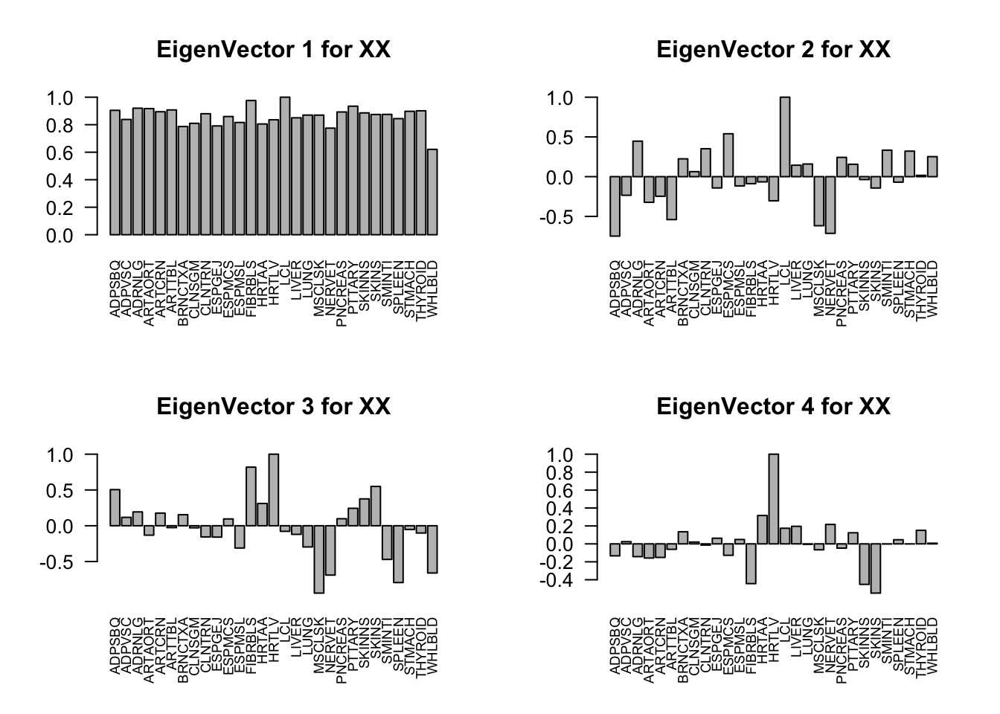
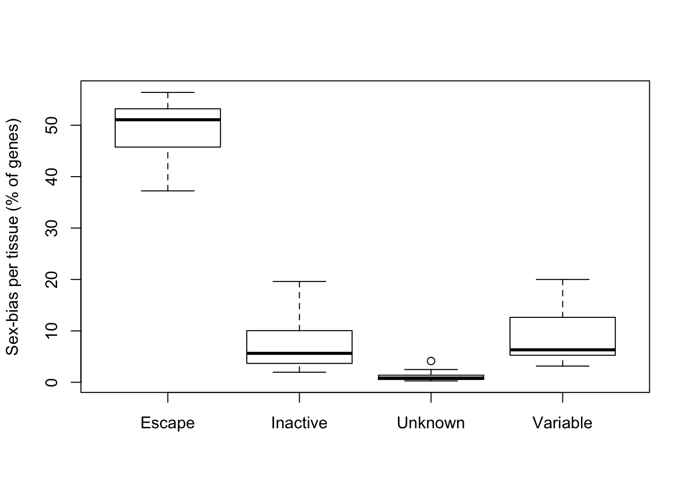

Table 2
Yuxin Zou
2018-2-1
Last updated: 2018-02-06
Code version: e0588e8
gdata: read.xls support for 'XLS' (Excel 97-2004) files ENABLED.gdata: read.xls support for 'XLSX' (Excel 2007+) files ENABLED.
Attaching package: 'gdata'The following object is masked from 'package:stats':
nobsThe following object is masked from 'package:utils':
object.sizeThe following object is masked from 'package:base':
startsWithLoading required package: ashrPackage 'mclust' version 5.4
Type 'citation("mclust")' for citing this R package in publications.
Attaching package: 'mclust'The following object is masked from 'package:ashr':
denscorrplot 0.84 loadedRead Table 2
There are missing value in the data. I guess this is caused by the 0 count, since the effect is \(\log_{2} (X_{1}/X_{2})\). We set these NAs to 0 with huge variance.
Since the sample size is large, we assume the p value is from normal distribution.
# some p values are exactly 1, z = 0,
# make them a little smaller
data$pval[data$pval == 1] = 0.999999
mash.data = mash_set_data(Bhat = data$logFC, pval = data$pval)
# set large variance to missing data
mash.data$Shat[data$missing] = 1000
# find strong genes
m.1by1 = mash_1by1(mash.data, alpha=1)
strong = get_significant_results(m.1by1, 0.01)
# estimate cor V on non strong genes
Z = mash.data$Bhat/mash.data$Shat
Z.null = Z[setdiff(1:349,strong),]Estimate covariance structure using strong genes
Z.strong = Z[strong,]
# center
Z.center = apply(Z.strong, 2, function(x) x - mean(x))Flash
\[ \tilde{Z} = LF' + E \] where F is \(29 \times K\), L is \(n \times K\), E is \(n\times 29\).
K = 10
mash_data_flash = flash_set_data(as.matrix(Z.center))
f_greedy = flash_add_greedy(mash_data_flash, Kmax=K, var_type = 'by_column')
# Backfitting
f_greedy_bf = flash_backfit(mash_data_flash,f_greedy, var_type = 'by_column')
F_flash = flash_get_f(f_greedy_bf)
L_flash = flash_get_l(f_greedy_bf)
FlashResult = list(f_greedy = f_greedy,
f = f_greedy_bf,
F_flash = F_flash,
L_flash = L_flash)
saveRDS(FlashResult, '../output/Flash_T2_0.rds')Flash result
The first factor explains the main proportion of variance in effects.
flash_get_pve(FlashResult$f)[1] 0.804143582 0.010058410 0.013051801 0.007891996 0.003997616 0.000000000The first factor is the overall summary of treatment effects.
Clustering loadings
loading = FlashResult$L_flash[,1:5]
row.names(loading) = rownames(Z.strong)
colnames(loading) = paste0('F',seq(1,5))
mod = Mclust(loading)
summary(mod$BIC)
saveRDS(mod, '../output/Flash_T2_0_mclust.rds')Using clustering result to fit mash:
\[l_{i}\sim \sum_{i=1}^{m}N(\mu_{i}, \Sigma_{i})\] We estimate the covariance as \(F(\Sigma_i + \mu_{i}\mu_{i}')F'\).
U_list = alply(mod$parameters$variance$sigma,3)
mu_list = alply(mod$parameters$mean,2)
Factors = FlashResult$F_flash[,1:5]
ll = list()
for (i in 1:length(U_list)){
ll[[i]] = U_list[[i]] + mu_list[[i]] %*% t(mu_list[[i]])
}
U.loading = lapply(ll, function(U){Factors %*% (U %*% t(Factors))})
names(U.loading) = paste0('Load', "_", (1:length(U.loading)))
# rank 1
Flash_res = flash_get_lf(FlashResult$f)
U.Flash = c(mashr::cov_from_factors(t(as.matrix(FlashResult$F_flash[,1:5])), "Flash"),
list("tFlash" = t(Flash_res) %*% Flash_res / nrow(Z.center)))PCA
U.pca = cov_pca(mash_set_data(Z.center), 8)Canonical
U.c = cov_canonical(mash_set_data(Z.center))Extreme Deconvolution
U.dd = c(U.pca, U.loading, U.Flash, list('XX' = t(Z.center) %*% Z.center / nrow(Z.center) ))
saveRDS(cov_ed(mash_set_data(Bhat = Z.strong), U.dd), '../output/Mash_EZ_Cov_0_plusR1.rds')mash model
vhat = 1
if (vhat == 1) {
V = cor(Z.null)
} else {
V = diag(ncol(Z.null))
}
mash_data = mash_set_data(Bhat = mash.data$Bhat, Shat = mash.data$Shat, V = V, alpha = 1)
saveRDS(mash(mash_data, c(U.c, U.ed)), '../output/Mash_model_0_plusR1.rds') - Computing 959 x 1141 likelihood matrix.
- Likelihood calculations took 1.00 seconds.
- Fitting model with 1141 mixture components.Warning in REBayes::KWDual(A, rep(1, k), normalize(w), control = control): estimated mixing distribution has some negative values:
consider reducing rtolWarning in mixIP(matrix_lik = structure(c(0.0332918608225943,
0.00111695729545662, : Optimization step yields mixture weights that are
either too small, or negative; weights have been corrected and renormalized
after the optimization. - Model fitting took 7.68 seconds.
- Computing posterior matrices.
- Computation allocated took 1.41 seconds.FIXME: 'compute_posterior_matrices' in Rcpp does not transfer EZ to EEV1 EZ result
The log-likelihood of fit is
get_loglik(mash.model)[1] -81718.99Here is a plot of weights learned.

Check ED_XX and ED_tPCA: 
Among the 959 genes, MASH found 292 to be significant in at least one treatment. The result is similar as condition by condition analysis.
Missing.lfsr = mash.model$result$lfsr * data$missing
Missing.lfsr[Missing.lfsr == 0] = NA
sum(Missing.lfsr < 0.01, na.rm = TRUE)[1] 10Some effects are estimated as significant, even though they are originally missing!
For example, the original data is missing for gene RP11-706O15.3 at tissue ADRNLG. In the mash.data, it has Bhat = 0 with Shat = mash.data$Shat[880,3]. The posterior mean from the mash model is 636.3798056 with sd 154.0879983.

Session information
sessionInfo()R version 3.4.3 (2017-11-30)
Platform: x86_64-apple-darwin15.6.0 (64-bit)
Running under: macOS High Sierra 10.13.3
Matrix products: default
BLAS: /Library/Frameworks/R.framework/Versions/3.4/Resources/lib/libRblas.0.dylib
LAPACK: /Library/Frameworks/R.framework/Versions/3.4/Resources/lib/libRlapack.dylib
locale:
[1] en_US.UTF-8/en_US.UTF-8/en_US.UTF-8/C/en_US.UTF-8/en_US.UTF-8
attached base packages:
[1] stats graphics grDevices utils datasets methods base
other attached packages:
[1] corrplot_0.84 plyr_1.8.4 mclust_5.4 flashr_0.4-3 mashr_0.2-4
[6] ashr_2.2-3 gdata_2.18.0
loaded via a namespace (and not attached):
[1] Rcpp_0.12.15 knitr_1.17 magrittr_1.5
[4] REBayes_1.2 MASS_7.3-47 pscl_1.5.2
[7] doParallel_1.0.11 SQUAREM_2017.10-1 lattice_0.20-35
[10] foreach_1.4.4 stringr_1.2.0 tools_3.4.3
[13] parallel_3.4.3 grid_3.4.3 rmeta_2.16
[16] git2r_0.20.0 htmltools_0.3.6 iterators_1.0.9
[19] gtools_3.5.0 assertthat_0.2.0 yaml_2.1.16
[22] rprojroot_1.2 digest_0.6.13 Matrix_1.2-12
[25] codetools_0.2-15 evaluate_0.10.1 rmarkdown_1.8
[28] stringi_1.1.6 compiler_3.4.3 Rmosek_8.0.69
[31] backports_1.1.2 mvtnorm_1.0-7 truncnorm_1.0-7 This R Markdown site was created with workflowr